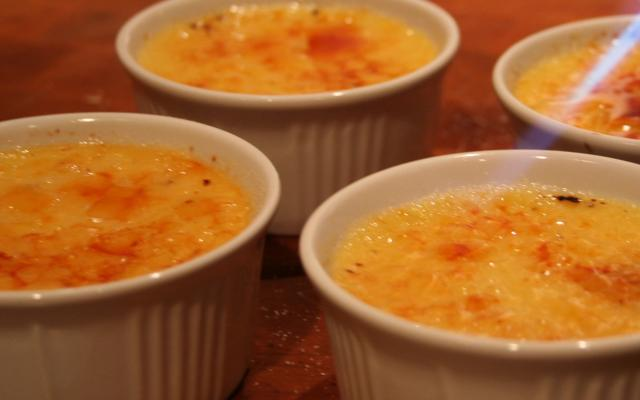

Crème Brûlée
Een recept voor crème brûlée, één van de heerlijkste gerechten om een diner mee af te sluiten.
Ingrediënten
- 75 g griessuiker
- 1 vanillestokje
- 25 cl room
- 4 kl rietsuiker
- 5 eierdooiers
- 25 cl melk
Bereidingswijze
- Breng de room en de melk aan de kook met het vanillestokje. Neem van het vuur en laat 10 minuten trekken.
- Schraap het vanillemerg uit het stokje en doe het bij de roommelk.
- Klop de eierdooiers wit-schuimig met de suiker. Giet er de kokendhete roommelk bij. Roer krachtig.
- Zet de pot nog 1 minuut op het vuur. Blijf roeren, laat vooral niet meer koken!
- Verdeel de crème over vuurvaste kommetjes. Zet ze in een warmwaterbad ongeveer 30 minuten in de oven op 175 graden Celsius.
- Laat minstens 4 uur (of nog beter een nacht) afkoelen in de koelkast.
- Strooi de rietsuiker op de crème. Zet de kommetjes een paar minuten onder de hete grill, helemaal bovenaan in de oven of karamelliseer de suiker met een brandertje.
